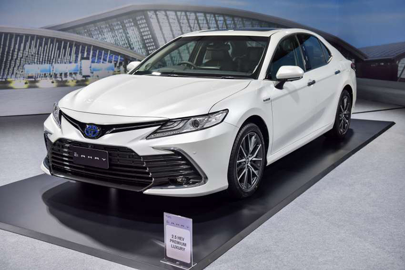

Đăng vào ngày 19 tháng 2 năm 2022
Fortuner Legender 2.4AT 4x2 sở hữu diện mạo khá tương đồng với Fortuner Legender 2.8AT 4x4 nhưng
ngoại thất thể thao ấn tượng nhất. Xe được thay đổi nhiều chi tiết so với các bản khác bao gồm
lưới tản nhiệt 2 tầng, đèn pha 3 khoang thường, cụm đèn LED dạng xương cá và 2 cụm đèn hậu màu
đen. Đặc biệt, nó được bổ sung thêm màn hình cảm ứng 8 inch, kết nối Android Auto, Apple
CarPlay, tính năng đá cốp và camera 360 chinh phục nhiều hành khách sành điệu.

Đăng vào ngày 14 tháng 1 năm 2022
Model X Performance là phiên bản thay thế của P100D trước đây. Vì vậy dòng chữ P100D giờ đây
cũng bị lược bỏ và thay bằng dòng chữ "Dual Motor". Xe được trang bị hai động cơ điện cho tổng
công suất 762 mã lực cùng mô-men xoắn cực đại 1.140 Nm. Khả năng tăng tốc 0-97 km/h của xe là
2,6 giây- ngang ngửa với siêu xe Bugatti Veyron 16.4. Và đạt vận tốc tối đa 250 km/h.

Đăng vào ngày 24 tháng 10 năm 2022
Tuy Toyota Camry 2022 chỉ là phiên bản facelift nhưng mẫu xe lại có sự nâng cấp đáng kể về động
cơ và hộp số. Xe Camry mới cung cấp 3 tuỳ chọn:
Phiên bản 2.0G và 2.0Q sử dụng động cơ 2.0L, 4 xylanh thẳng hàng (mã M20A-FKS) cho công suất tối
đa 170 mã lực tại 6.600 vòng/phút và mô men xoắn cực đại 206Nm tại 4.400 – 4.900 vòng/phút, kết
hợp hộp số tự động vô cấp CVT.
Phiên bản 2.5Q sử dụng động cơ 2.5L, 4 xylanh thẳng hàng (mã A25A-FKS) cho công suất tối đa 207
mã lực tại 6.600 vòng/phút và mô men xoắn cực đại 250Nm tại 5.000 vòng/phút, kết hợp hộp số tự
động 8 cấp.

Đăng vào ngày 3 tháng 4 năm 2022
Ngoài tiện nghi, cấu hình vận hành cũng là điểm khác biệt chính của phiên bản xe bán tải Toyota
này. Cung cấp sức mạnh cho Hilux 2.4 4×2 AT 2020 là khối động cơ 2GD-FTV (2.4L), 4 xy-lanh thẳng
hàng, dung tích 2.393 cc, phun nhiên liệu trực tiếp sử dụng đường ống dẫn chung, tăng áp biến
thiên, đạt tiêu chuẩn khí thải Euro 4.
Với lợi thế về khoảng sáng gầm lên đến 293 mm, vượt trội hơn hẳn con số 200 mm trên địch thủ
Ford Ranger 2.2L XLS 4×2 AT, Hilux 2.4 4×2 AT 2020 có thể “leo trèo” thoải mái và thích ứng
nhanh với tình trạng ngập nước.
Để khung xe hạn chế rung lắc quá nhiều khi vượt địa hình, Hilux 2.4 4×2 AT 2020 đã được trang bị
hệ thống treo Trước dạng tay đòn kép và treo sau dạng Nhíp lá quen thuộc trên các dòng bán tải.
Cảm giác đánh lái khá đầm và “thật” vì xe vẫn trung thành với kiểu trợ lực thủy lực truyền
thống.
Đi kèm là bộ lốp dày có thông số 265/65R17 tăng khả năng bám đường và tạo độ êm nhất định cho
khang cabin. Tuy nhiên, Hilux 2.4 4×2 AT 2020 vẫn còn sử dụng hệ thống phanh sau dạng tang trống
thay vì phanh đĩa như nhiều mẫu xe mới ra mắt gần đây.

Đăng vào ngày 15 tháng 9 năm 2022
Đánh giá chi tiết các trang bị kia Sportage
ĐỘNG CƠ, VẬN HÀNH KIA SPORTAGE- Các phiên bản 2.0G sử dụng dụng động cơ xăng 2.0 lít, sản sinh
ra công suất tối đa 154 mã lực và mô men xoắn cực đại đạt 192 Nm. Kết hợp với hộp số tự động 6
cấp và dẫn động cầu trước.
- Các phiên bản 1.6 Turbo sử dụng động cơ xăng tăng áp 1.6 lít, sản sinh ra công suất tối đa 177
mã lực và mô men xoắn cực đại đạt 265 Nm. Kết hợp với hộp số ly hợp kép tự động 7 cấp và hệ dẫn
động 4 bánh toàn thời gian.
- Các phiên bản 2.0D sử dụng động cơ dầu 2.0 lít, sản sinh ra công suất tối đa 183 mã lực và mô
men xoắn cực đại 416 Nm, kết hợp với hộp số tự động 8 cấp và hệ dẫn động cầu trước.
Đăng vào ngày 24 tháng 10 năm 2022
Đầu năm 2004, Vidamco tiếp tục cho ra đời hai phiên bản cải tiến của Magnus gồm Magnus L6 2.5 và
Magnus Eagle 2.0 với tham vọng chiếm lĩnh phân khúc sedan cỡ lớn.
Trang bị động cơ 6 xi-lanh thẳng hàng với giá bán 32.900 USD, Magnus L6 trang bị động cơ cam kép
DOHC công suất 157 mã lực ở mức 5.800 vòng/phút và môn-men xoắn cực đại 245 Nm ở 4.000
vòng/phút. Tốc độ tối đa của xe đạt 210 km/h.
.jpg)
Đăng vào ngày 24 tháng 10 năm 2022
Nâng Tầm Thiết Kế:
Phần đầu xe Everest Titanium+ đặc biệt nổi bật với lưới tản nhiệt dạng lưới mạ crôm kết hợp cùng
cụm đèn LED hình chữ C mang đậm đặc trưng thiết kế toàn cầu của Ford. Các điểm nhấn mạ crôm trên
gương, tay nắm cửa, bậc lên xuống hai bên xe tạo nên vẻ cứng cáp nhưng vẫn vô cùng sang trọng
cho chiếc xe.
Mâm Xe Hợp Kim với thiết kế hiện đại:
Mâm xe hợp kim lớn 20 inch đa chấu đươc hoàn thiện tỉ mỉ, tôn thêm vẻ bề thế, cơ bắp và linh
hoạt cho Titanium+. Các điểm nhấn mạ chrôm trên tấm chắn bùn giúp gắn kết bánh xe với phần thân
trên.
.jpg)
Đăng vào ngày 24 tháng 10 năm 2022
Động cơ 2.0L + hộp số 6AT • Đèn pha LED + mâm xe 18" • Nội thất da + Ghế chỉnh điện + Nhớ vị trí
• Khởi động nút bấm • Gương chống chói (Trong + Ngoài) • Cảm biến sau • Màn hình 8.8’’ + 8 loa •
7 túi khí + Camera lùi + ESP • Có cửa sổ trời, có đầu CD/DVD • Màn hình HUD và Các hệ thống an
toàn trong gói i-Activsense (BSM, LAS, MRCC, SBS) • Cảm biến trước
Đăng vào ngày 4 tháng 10 năm 2022
Cao: 1.621 mm
Công suất 265 PS (195 kW)
Mô men xoắn cực đại 400 Nm
Tăng tốc từ 0 - 100 km/giờ (0 - 62 dặm/giờ) 6,4 giây (6,2 giây với gói Sport Chrono)
Tốc độ tối đa 232 km/giờ
Tiêu thụ nhiên liệu kết hợp (lít/100km) 8,8 - 8,7
Lượng khí thải CO2 (g/km) 11,5